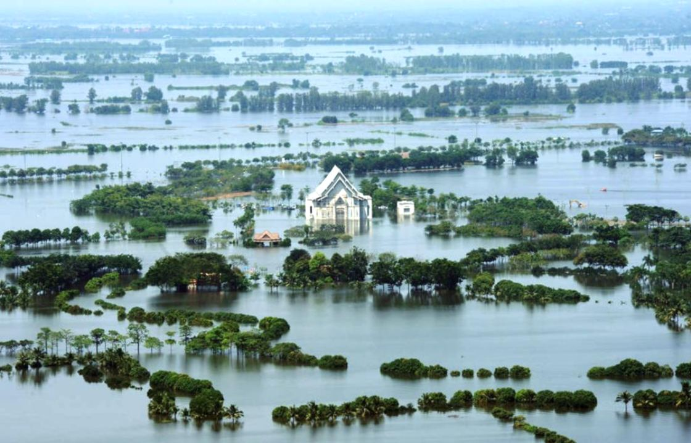
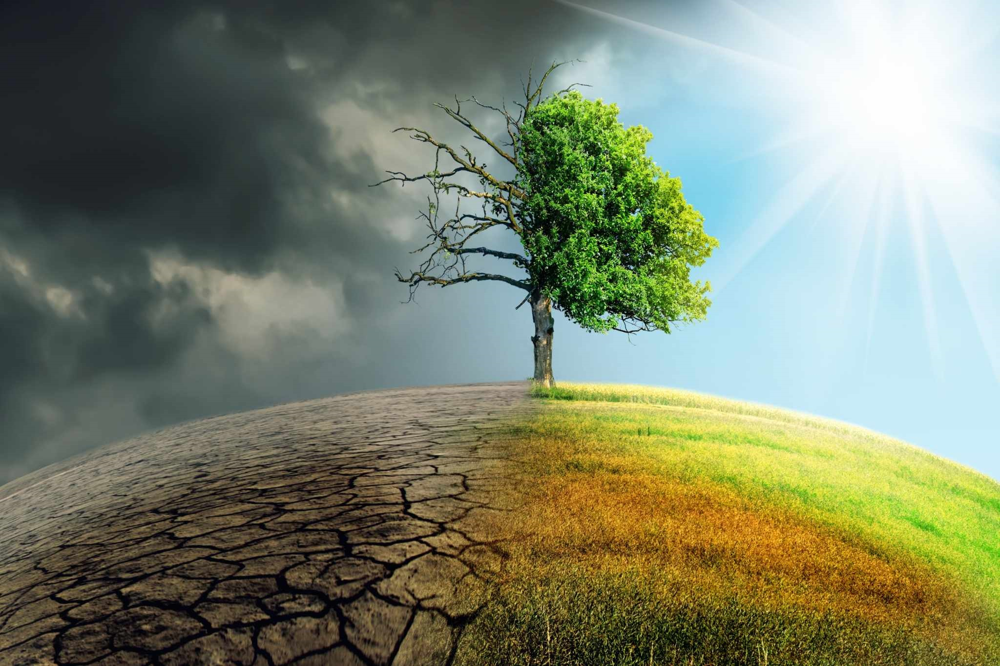
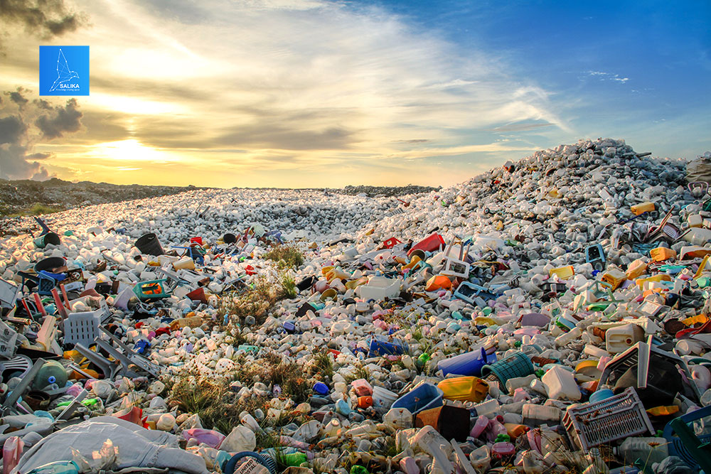

 
ຍ້ອນວ່າການພັດທະນາຂອງລາວສ່ວນໃຫຍ່ແມ່ນອີງໃສ່ຊັບພະຍາກອນທຳມະຊາດເຊັ່ນ ການກະສິກຳ, ພະລັງງານໄຟຟ້ານ້ຳຕົກ, ການຂຸດຄົ້ນບໍ່ແຮ່ ແລະ ປ່າໄມ້, ປະເທດລາວຈຶ່ງມີຄວາມອ່ອນໄຫວ
ສູງຕໍ່ການປ່ຽນ
ແປງຂອງສະພາບອາກາດ. ຜ່ານລາວໄດ້ຜະເຊີນກັບສະພາບອາກາດທີ່ມີລັກສະນະຮຸນແຮງຫຼາຍຄັ້ງ. ນັບແຕ່ປີ 1990-2015, ລາວໄດ້ປະສົບກັບໄພພິບັດທີ່ເກີດຈາກນ້ຳຖ້ວມ ແລະ ພາຍຸ
21 ຄັ້ງ, ເຊິ່ງແຕ່ລະຄັ້ງໄດ້
ສົງຜົນກະທົບກວ້າງຂວາງຕໍ່ການປູກຝັງ, ລ້ຽງສັດ, ແລະ ຊີວິດການເປັນຢູ່ຂອງປະຊາຊົນຫຼາຍແສນຄົນໂດຍສະເລ່ຍ. ການປ່ຽນແປງຂອງສະພາບອາກາດທີ່ຮຸນແຮງກວ່າແຕ່
ກ່ອນ ໄດ້ສົ່ງຜົນຕໍ່ຊຸມຊົນຕ່າງໆ ໂດຍສະ
ເພາະແມ່ນຊາວຊົນນະບົດທີ່ທຸກຍາກ, ຕໍ່ກັບຄວາມໝັ້ນຄົງດ້ານສະບຽງອາຫານ ແລະ ສຸຂະພາບ, ສ້າງຄວາມເສຍຫາຍໃຫ້ແກ່ພື້ນຖານໂຄງລ່າງ ເຊັ່ນ ຖະໜົນ, ບ້ານເຮືອນ ແລະ ລະບົບສະໜອງກະແສໄຟຟ້າ ເຊິ່ງ
ສ່ວນໃຫຍ່ບໍ່ສາມາດຮອງຮັບຕໍ່ສະພາບອາກາດທີ່ຮຸນແຮງ ແລະ ຍັງສົ່ງຜົນຕໍ່ການພັດທະນາປະເທດໃນໄລຍະຍາວ,
ການປ່ຽນແປງຢ່າງໄວວາໃນການດຳເນີນການບໍລິຫານຈັດການດິນ ແລະ ການນຳໃຊ້ຊັບພະຍາກອນທຳມະຊາດໃນລາວໄດ້ນຳໄປສູ່ການນຳໃຊ້ສານເຄມີໃນການກະສິກຳເພື່ອຊ່ວຍເຂົ້າໃນ
ການຂະຫຍາຍທີ
ດິນກະສິກຳ, ການປູກໄມ້ອຸດສາຫະກຳ ແລະ ການຂຸດຄົ້ນບໍ່ແຮ່ຕ່າງໆ. ຕົວຢ່າງ: ການພັດທະນາຢ່າງໄວວາຂອງອຸດສາຫະກຳສວນຢາງພາລາ ແລະ ສວນໄມ້ເພື່ອຜະລິດເຈ້ຍຂະໜາດ
ໃຫຍ່ ປະກອບກັບແຮງ
ງານທີ່ຈຳກັດເຮັດໃຫ້ມີການນຳໃຊ້ປຸຍ ແລະ ຢາຂ້າຫຍ້າຈຳນວນຫຼວງຫຼາຍ. ສານເຄມີໃນການກະສິກຳເຫຼົ່ານີ້ກໍ່ໃຫ້ເກີດບັນຫາດ້ານສຸຂະພາບຂອງຜູ້ອອກແຮງງານ ແລະ ແຫຼ່ງນ້ຳດື່ມທີ່ປົນເປື້ອນມົນລະພິດ
ເຊັ່ນຫ້ວຍນໍ້າຕ່າງໆ.

ນອກນັ້ນ ການປ່ອຍຂອງເສຍຈາກການຂຸດຄົ້ນບໍ່ແຮ່ກໍມີການເຊື່ອມໂຍງກັບມົນລະພິດທາງດິນ ແລະ ນໍ້າ. ຕົວຢ່າງ: ການນຳໃຊ້ສານໄຊຍາໄນ (cyanide) ໃນການຂຸດຄົ້ນບໍ່ຄຳໄດ້ສົ່ງຜົນໃຫ້ປາ
ຕາຍ ແລະ ມີການ
ປົນເປື້ອນໃນດິນ. ເຖິງແມ່ນວ່າການຂຸດຄົ້ນບໍ່ແຮ່ຂະໜາດໃຫຍ່ຈະນຳໃຊ້ເຕັກໂນໂລຊີທີ່ທັນສະໄໝ ເພື່ອຊ່ວຍໃຫ້ການໃຊ້ສານເຄມີອຸດສາຫະກຳມີຄວາມປອດໄພ ແລະ ມີ
ປະສິດທິພາບຫຼາຍຂຶ້ນ, ແຕ່ການຂຸດຄົ້ນດັ່ງ
ກ່າວກໍ່ຍັງເຮັດໃຫ້ພື້ນທີ່ປ່າໄມ້ທີ່ກວ້າງໃຫຍ່ເຊື່ອມໂຊມລົງໄດ້. ການຂຸດຄົ້ນບໍ່ແຮ່ຂະໜາດນ້ອຍກໍມີຜົນກະທົບຕໍ່ສິ່ງແວດລ້ອມ ໂດຍການຈຳກັດການນຳໃຊ້ທີ່
ດິນທຳການຜະລິດ ແລະ ການປະມົງ ເນື່ອງຈາກການຂຸດ
ຄົ້ນ ຫຼື ການປົນເປື້ອນສານບາຫຼອດ.ໂຄງການຂະໜາດກາງອື່ນໆທີ່ບໍລິສັດລາວຈ້າງຜູ້ຮັບເໝົາຂະໜາດນ້ອຍຈາກປະເທດຫວຽດນາມ ແລະ ຈີນ ໄດ້ເຮັດໃຫ້ເກີດມີມົນລະພິດທາງນໍ້າຍ້ອນໂລຫະໜັກ ແລະ ສົ່ງ
ຜົນກະທົບຕໍ່ການໄຫຼຂອງນໍ້າໃນແມ່ນໍ້ານ້ອຍ.
ອີກດ້ານໜຶ່ງ ການຂະຫຍາຍຕົວຂອງຕົວເມືອງ ແລະ ຮູບແບບການບໍລິໂພກໄດ້ສົ່ງຜົນໃຫ້ ການຜະລິດຂີ້ເຫຍື້ອໃນລາວເພີ່ມຂຶ້ນ. ໂດຍສະເລ່ຍການສ້າງຂີ້ເຫຍື້ອໃນຕົວເມືອງໃນລາວແມ່ນ 0.70
ກິໂລກຣາມຕໍ່ຫົວຄົນ
ຕໍ່ວັນ, ເຊິ່ງສູງກວ່າອັດຕາໃນປະເທດອິນໂດເນເຊຍ ແລະ ຟິລິປິນ. ວິທີຫຼັກໃນການກຳຈັດຂີ້ເຫຍື້ອເຫຼົ່ານີ້ແມ່ນການນຳໃຊ້ສະໜາມຝັງຂີ້ເຫຍື້ອ ນອກຈາກນັ້ນກໍຍັງມີການຈູດຂີ້
ເຫຍື້ອຕາມສະຖານທີ່ຫວ່າງເປົ່າ. ໃນ
ລາວມີສະໜາມຂີ້ເຫຍື້ອຫຼັກສະເພາະແຕ່ໃນນະຄອນຫຼວງວຽງຈັນ ແລະ ມີສະໜາມຂີ້ເຫຍື້ອສຳຮອງສີ່ແຫ່ງ ໃນເມືອງ ຫຼວງພະບາງ, ທ່າແຂກ, ສະຫວັນນະເຂດ,
ແລະ ປາກເຊ. ນອກນີ້ ກໍຍັງມີສະໜາມຂີ້ເຫຍື້ອຂະ
ໜາດນ້ອຍຢູ່ໃນບັນດາເມືອງຕາມແຂວງຕ່າງໆ. ໃນຈຳນວນ 141 ເມືອງດັ່ງກ່າວ, ມີສະໜາມຂີ້ເຫຍື້ອພຽງ 14 ແຫ່ງທີ່ມີການຄວບຄຸມ.
ການຖິ້ມຂີ້ເຫຍື້ອໃນຊຸມຊົນແມ່ນຂາດການບໍລິຫານຈັດການທີ່ດີ, ບາງແຫ່ງ
ກໍທຳການຈູດຂີ້ເຫຍື້ອ ຫຼື ຖີ້ມຂີ້ເຫຍື້ອແບບຊະຊາຍ ຢູ່ຕາມສະຖານທີ່ເປົ່າຫວ່າງ, ຮ່ອງນ້ຳ ຫຼື ແມ່ນ້ຳຕ່າງໆ. ຂີ້ເຫຍື້ອອັນຕະລາຍ ເຊັ່ນ ຖ່ານໄຟສາຍ, ກະປ໋ອງສີ, ແລະ ປ໋ອງສະເປຕ່າງໆກໍຖີ້ມປະປົນກັບຂີ້ເຫຍື້ອ
ທົ່ວໄປ ແຕ່ວ່າບໍ່ມີມາດຕະການຕິດຕາມການໄຫຼຊຶມຂອງນ້ຳເສຍທີ່ອາດເກີດຂຶ້ນຕໍ່ກັບທີ່ດິນ,
ແຫຼ່ງນ້ຳເທິງໜ້າດິນ ແລະ ນ້ຳບາດານ. ຍ້ອນຂໍ້ຈຳກັດດ້ານງົບປະມານ ແລະ ໂຄງສ້າງກົດໝາຍທີ່ບໍ່ພຽງພໍ, ຄວາມຮັບຜິດ
ຊອບທາງສະຖາບັນ ແລະ ການຄຸ້ມຄອງ, ການບໍລິຫານຂີ້ເຫຍື້ອຈຶ່ງຕ້ອງເປັນຄວາມຮັບຜິດຊອບຂອງຄົວເຮືອນ ແລະ ຊຸມຊົນ ເຊິ່ງຕ້ອງອາໄສການລົນນະລົງສຶກສາອົບຮົມເພື່ອເຜີຍແຜ່ຂໍ້ມູນຕໍ່ສາທາລະນະ.